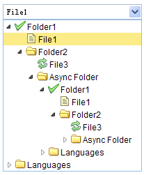

组合树
继承$.fn.combo.defaults和$.fn.tree.defaults，属性和方法可以使用combo，tree的，具体参考tree.html，combo.html. 使用$.fn.combotree.defaults重载默认值。
依赖关系
- 自定义组合框
- 树形菜单
使用方法
<select id="cc" style="width:200px;"></select>
<input id="cc" value="01">
$('#cc').combotree({ url:'tree_data.json' });
属性
属性继承自定义组合框和树形菜单，以下是组合树重载的属性。
| 名称 | 类型 | 描述 | 默认值 |
|---|---|---|---|
| editable（可编辑） | boolean（布尔型） | 定义用户是否可以直接输入。 | false |
事件
事件继承自定义组合框和树形菜单
方法
方法继承自定义组合框，以下是组合树独有的或者重载自定义组合框的方法。
| 名称 | 参数 | 描述 |
|---|---|---|
| options | none | 返回属性对象。 |
| tree | none | 返回树形菜单对象。
var t = $('#cc').combotree('tree'); // 得到树对象
var n = t.tree('getSelected'); // 得到选中的节点
alert(n.text);
|
| loadData | data | 载入本地树形菜单数据。
$('#cc').combotree('loadData',
[
[
{
"id": 1,
"text": "My Documents",
"iconCls": "icon-ok",
"pid": ""
},
{
"id": 11,
"text": "Photos",
"state": "closed",
"pid": "1"
}
]
]
);
|
| reload | url | 再次向远程树形菜单数据发起请求。 |
| clear | none | 清除组件值。 |
| setValues | values | 设置组合框的值，参数values是一个数组。$('#cc').combotree('setValues', [1,3,21]);
|
| setValue | value | 设置组合框的值。$('#cc').combotree('setValues', 1);
|